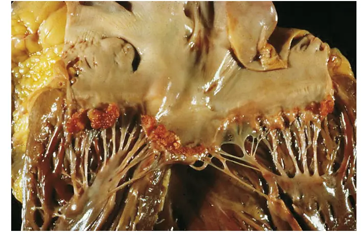
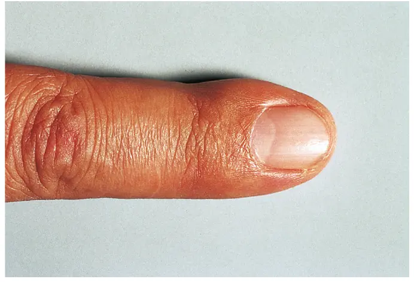

نسخه استخراجشده؛ ترجمه یا تأیید علمی انجام نشده است. وضعیت: captured
آقای ۵۸ سالهای که دو سال پیش دریچهی آئورتش را با دریچهی مصنوعی عوض کرده، برای درد دندان آمده. میگوید سه هفته است تب خفیف و خستگی دارد و «سرماخوردگیاش خوب نمیشود». روی کامش چند پتشی ریز میبینی. به چه فکر میکنی؟

اندوکاردیت عفونی (IE) عفونت سطح داخلی قلب است، بیشتر روی دریچهها. معمولاً کنار یک نقص مادرزادی یا اکتسابی قلب، یا روی دریچهی مصنوعی شروع میشود. بیشترش کار باکتری است، ولی قارچ هم میتواند عامل باشد.
داخل وژتاسیون، باکتری از دسترس گلبول سفید و آنتیبیوتیک دور است؛ برای همین درمان سخت است. تکههایی از وژتاسیون کنده میشوند و آمبولی میسازند: سکتهی مغزی، سکتهی قلبی یا آبسه در کلیه و طحال.
شایعترین عارضهی IE، نارسایی شدید دریچه است که به نارسایی قلب میرسد. بیدرمان کشنده است و حتی با درمان، مرگومیر حدود ۱۰ تا ۳۰٪ است.
تشخیص با معیارهای Duke است؛ کشت خون مثبت و دیدن وژتاسیون در اکوکاردیوگرافی دو ستون آناند. درمان، آنتیبیوتیک وریدی به مدت ۴ تا ۶ هفته و گاهی جراحی دریچه است.

اشتباه رایج: به بیمار پرخطرِ تبدار «یک دوره آنتیبیوتیک» بدهی و بفرستیاش. آنتیبیوتیک پیش از کشت خون، تشخیص را سختتر میکند. تب بیعلت در این بیمار یعنی ارجاع به پزشک، چه پروفیلاکسی گرفته باشد چه نه.